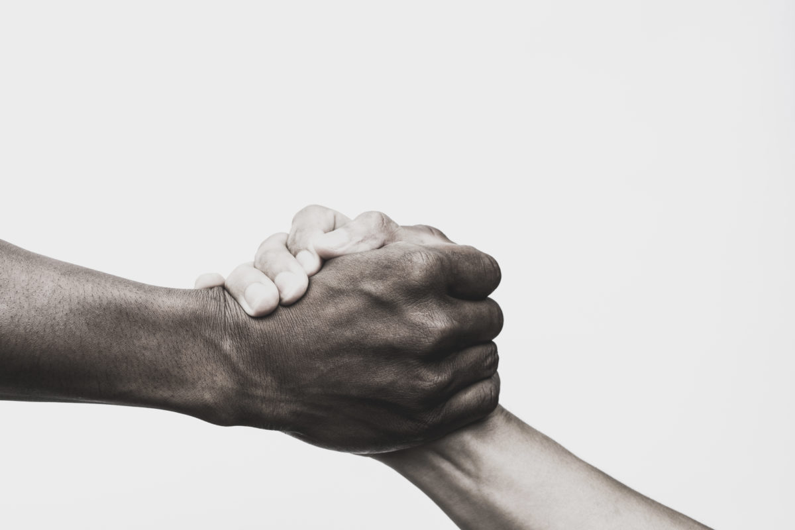

Education
I graduated with honors from Corner Canyon Highschool in Draper Utah in 2021.
I am currently an undergraduate at BYU studying accounting and am planning on attending lawschool after graduation to persue a degree in business law.
Achievements
What I consider to be my greatest achievements are tied to the principle of service. Beginning in September of last year, I signed up to serve as a volunteer in the Y-Serve program here at BYU. The division of Y-Serve that I am involved with is called the Impact Program.
The Impact Program is devoted to mentoring at-risk teens in the Utah Valley area. This involves helping them with their homework, supporting them in extracurricular activities, and overall, just being their friend. I will be forever grateful for the time I've spent in this program because I understand how much it helps these teens.
 "Everybody can be great because everybody can serve" -Unknown